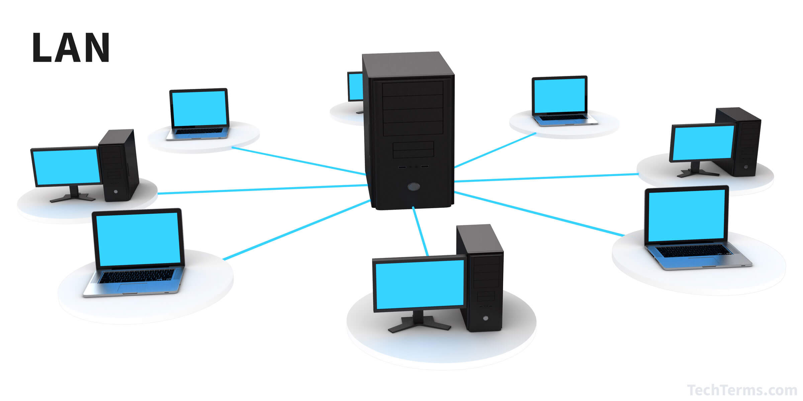

On the basis of geographical span, the network can be broadly categorized as PAN, LAN, MAN, and WAN.
A personal area network (PAN) is a computer network used for communication among computers and devices close to one person. Some examples of devices that are used in a PAN are personal computers, printers, fax machines, telephones, PDAs, scanners, and even video game consoles. A PAN may include wired and wireless devices. The reach of a PAN typically extends to 10 meters.
 Local Area networks (LAN) are private networks and can span a radius of up to 1 Km. They are generally established within a building or campus.LANs operate at a speed in the range 10 Mbps to 1 Gbps.
Metropolitan Area Network (MAN) may be owned by a single organization or by many individuals or organizations. These networks are used to establish links within a city, and span an area of radius up to 50 Km. MANs facilitate sharing of resources by connecting various local area networks For example, a cable television network within a city.
Wide Area Network (WAN) spans about 1000 Km. They are used for long distance communication and are well suited for connecting remote areas. They establish links within a country or continent. A WAN may be owned and managed by several organizations. It connects various local and metropolitan area networks.
A transmission medium refers to the channel of transmission through which data
transmitted from one node to another in the form of signal. A signal encodes the data in
a form suitable for transmission on the medium. A medium is characterized by its
bandwidth defining the information carrying capacity of the medium. Common meth
of Internet access by users include dial
circuits, broadband over coaxial cable, fiber optics or copper wires, Wi
cellular telephone technology (e.g. 3G, 4G).A transmission medium may belong to
of the following two categories:
The term refers to physical conductors such as twisted pairs, coaxial cable, and fiber optics. In twisted pair and coaxial cable, the signal travels as voltage and current signal whereas in optical fibre, light.
The unguided medium uses electro not require a physical conductor. Examples of unguided medium include microwave, radio wave,infrared.